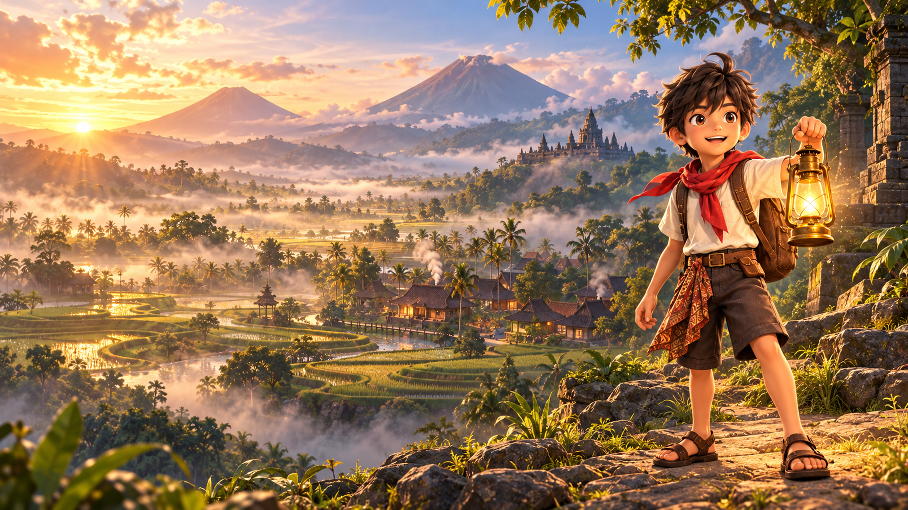

Bank soal kelas 5
151 baris soal: 147 aktif dan 4 diistirahatkan. Kini ada 51 variasi, dengan perbaikan fakta–pendapat, label Bloom, dan pengecoh. Butir yang direvisi masih perlu verifikasi.
Buka bank soal (.xlsx) ↗Baca analisis sebelum revisi ↗

Temukan karakter, latar, dan detail kecil yang menghidupkan petualangan. Semua bahan ada di sini, mudah dijelajahi.
Jelajahi koleksiJelajahi desain pilihan, coba interaksinya, dan lihat persiapan halaman berikutnya.
Kandidat gambar ditandai sebelum dipilih pengguna. Halaman lainnya memiliki brief dan prompt persiapan.
Pilih koleksi atau gunakan pencarian untuk mulai.
151 baris soal: 147 aktif dan 4 diistirahatkan. Kini ada 51 variasi, dengan perbaikan fakta–pendapat, label Bloom, dan pengecoh. Butir yang direvisi masih perlu verifikasi.
Buka bank soal (.xlsx) ↗27 dari 88 baris naskah diperbaiki, dengan kode tetap dan teks ID/EN. Revisi ini belum diterapkan pada brief audio katalog.
Baca naskah cerita ↗30 prompt untuk 10 variasi per wilayah. Target gambar 1200 × 1200 px WebP dengan latar penuh. 21 gambar tambahan dan empat gambar pengganti sudah tersedia di katalog. Isi gambar tetap perlu diperiksa peneliti sebelum digunakan.
Lihat panduan & prompt ↗Ringkasan mengikuti catatan revisi. Panduan puzzle merekomendasikan penggantian wajib untuk challenge.item.tmg-1-03 dan challenge.item.mgl-1-01; penggantian disarankan untuk challenge.item.tmg-1-01 dan challenge.item.wnb-1-07. Rekomendasi ini berasal dari paket revisi; gambar aktif belum diganti dan bukan hasil pemeriksaan baru.
Label “Sesuai gaya” mengikuti keputusan pengguna: 273 visual awal pada 11 Oktober 2026, 210 frame tambahan pada 12 Oktober, serta delapan aset UI hasil dan dua ikon bahasa pada 13 Oktober, dan 21 gambar puzzle tambahan pada 14 Oktober. Label ini bukan audit visual baru dan tidak berarti seluruh gambar lama sudah dibuat ulang. Penilaian sebelumnya tetap tersimpan sebagai riwayat.
Ilustrasi mengikuti gaya 3D dengan Jaka bersyal merah. Ikon kontrol memakai SVG sederhana; media faktual mengikuti brief dokumenter. Isi budaya, lisensi, transparansi, animasi, dan integrasi game perlu diperiksa sesuai kebutuhan. Audio memuat sembilan pratinjau sintetis tanpa vokal (tiga musik dan enam efek suara) yang dapat diputar. Delapan puluh delapan narasi tetap berupa brief. Penilaian bunyi dan mixing game belum dilakukan.
Koleksi memuat 240 frame karakter (10 pose × 24 frame), delapan aset UI hasil, dan ikon bendera Indonesia/UK. Halaman “Tantangan selesai” memakai satu konsep bersama lintas wilayah; Temanggung adalah contoh. Baca petunjuk komponen bersama ↗.